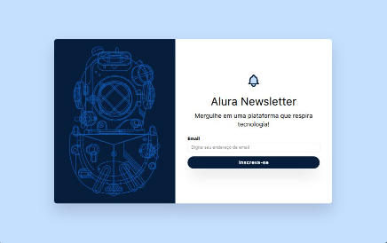
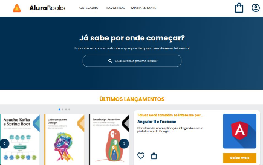

WELCOME
Me chamo Daniel Francisco, sou Desenvolvedor Front-End
SOBRE
Sou Daniel Francisco de Almeida, profissional com trajetória
iniciada na área da tecnologia como técnico em eletrônica. Desde
então, venho ampliando meus conhecimentos e experiências em
desenvolvimento de software.
🎓 Sou formado em Tecnólogo em Análise e Desenvolvimento de Sistemas
e Técnico em Desenvolvimento de Sistemas, e atualmente estou
cursando uma Pós-graduação em Desenvolvimento Full Stack pela PUC
Minas.
🚀 Tenho atuado em projetos práticos utilizando HTML, CSS,
JavaScript e Tailwind CSS, focando em interfaces modernas,
acessíveis e responsivas. Busco constantemente evoluir minhas
habilidades e contribuir com soluções que gerem valor para as
pessoas e organizações.
PROJETOS
Clone do Instagram

Primeira página utilizando o framework TailwindCSS, seguindo passo a passo da live do DevClub, porém apliquei outro conehcimento que eu ja tinha adquirido do mobile-first, que consiste em fazer a versão para telas de smartphones primeiro e depois adaptar à telas maiores.
Tecnologias utilizadas:
 HTML
HTML
 CSS
TailwindCSS
CSS
TailwindCSS
 GitHub
GitHub Vercel
VercelAlura Newsletter
Projeto realizado no curso da alura, mais um projeto usando TailwindCSS, porém aprofundando mais o conceito de variáveis customizadas, aplicamos animações no sininho em cima do título da página, isso mostra que essa framework é adequada para otimizar o CSS e para dar liberdade para o Dev personalizar seus estilos.
HTML
CSS
 JavaScript
JavaScript
Jogo da Advinhação

Este projeto do curso alura aplicamos os conhecimentos de JavaScript que adquirimos ao decorrer do curso, onde aprendi como utilizar a função "Math.radom" para gerar números aleatórios e também como criar funções para verificar se o jogador acertou, se ele esta perto de acertar ou longe de acertar o número secreto.
HTML
CSS
JavaScript
AluraBooks
Primeiro projeto usando uma biblioteca de JavaScript, usamos o Swiper.JS para criar o carrosel de livros, inclusive é a mesma biblioteca utilizada neste site do meu portofólio, aprimorei meus conhecimentos nesta biblioteca para desenvolver este carrosel.
HTML
CSS
JavaScript